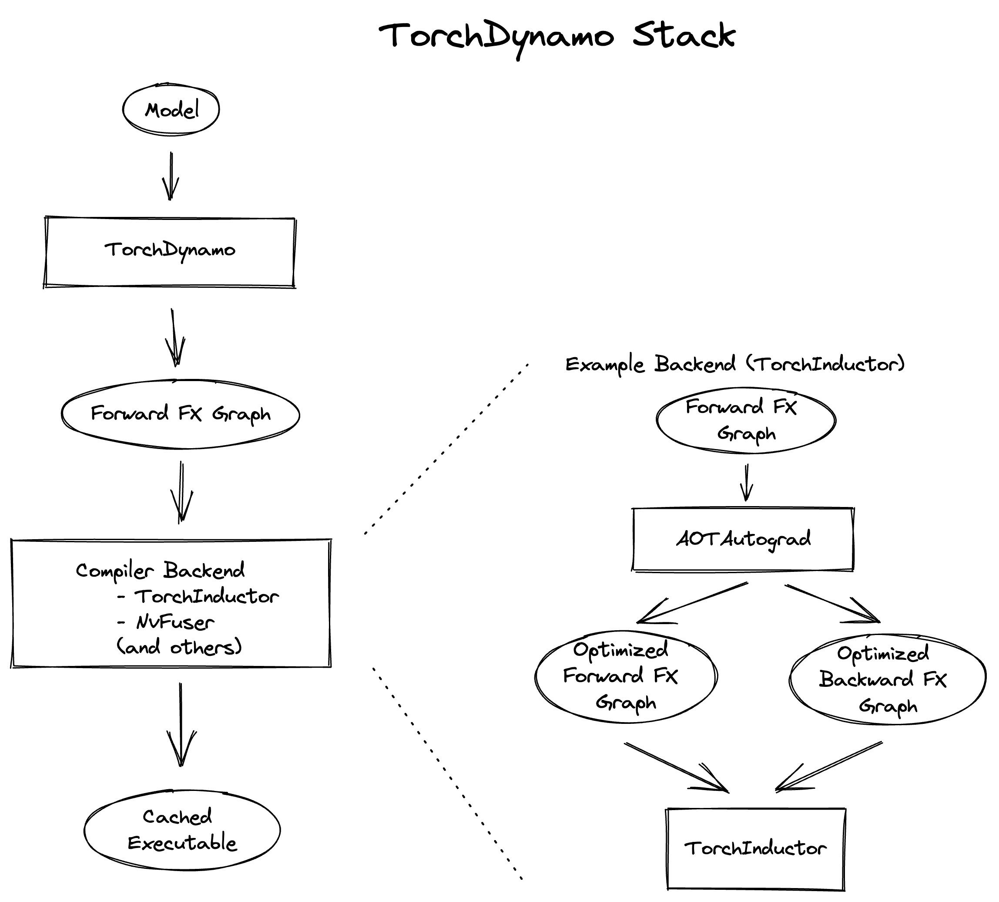

torch.compile Troubleshooting¶
You’re trying to use torch.compile on your PyTorch model to enhance its performance
but it’s not working as expected. Perhaps performance isn’t improving, crashes are happening, or compilation time is too long. This article provides tips, workarounds, and debugging tools to help you overcome these challenges.
Contents
Setting Expectations¶
torch.compile is designed as a general-purpose PyTorch compiler.
Unlike the previous compiler solution, TorchScript, torch.compile
requires fewer code changes, meaning models typically don’t need to be rewritten from scratch.
It also manages unsupported code more gracefully - unsupported code results in a lost optimization opportunity rather than a crash.
In the ideal world, one can simply apply torch.compile to any PyTorch model and enjoy automatic speedups.
However, in reality, code complexities can lead to one of three scenarios:
torch.compileworks seamlessly, providing speedups.Some code modifications are necessary.
torch.compiledoesn’t crash or take too long, but you might not be seeing significant performance gains.Extensive changes to your code are required.
We anticipate most code will fall under scenarios (1) and (2). This document provides tips, arranged by level of involvement, to help address code issues in scenario (2).
Compile times¶
torch.compile functions as a just-in-time compiler, so the initial one or two runs
of the compiled function are expected to be significantly slower. Recompilations, which can occur under certain conditions (detailed below),
will also make runs slower. Various torch.compile components cache results to
reduce compilation time for future invocations, even in different processes.
Cold-start (uncached) compilation time typically ranges from seconds to minutes for common or benchmarked models.
Larger models may take upwards of 30 minutes to a few hours.
Terminology¶
The following terms are relevant to troubleshooting torch.compile problems.
Graph break¶
torch.compile traces your code and attempts to capture your PyTorch code into a
single computation graph of PyTorch operators (FX graph). However, this is not always possible.
When encountering code that can’t be traced, a “graph break” occurs.
A graph break involves compiling the FX graph has been determined so far, running the unsupported code,
then resuming tracing after the unsupported code with a new FX graph.
Because the computation graph is broken up, we lose optimization opportunities,
so model code should avoid graph breaks whenever possible.
Graph breaks occur on things like:
Data-dependent if-statements
Many Python built-in functions
C functions
Below is an example of a graph break due to the function copy.deepcopy from a Python builtin library
(exact output may differ).
import torch
@torch.compile
def fn(x):
x = x + 1
with open("test.txt", "r") as f:
return x + len(f.read())
fn(torch.ones(3, 3))
$TORCH_LOGS="graph_breaks" python playground.py
Graph break in user code at /data/users/williamwen/pytorch/playground.py:7
Reason: Unsupported: builtin: open [<class 'torch._dynamo.variables.constant.ConstantVariable'>, <class 'torch._dynamo.variables.constant.ConstantVariable'>] False
User code traceback:
File "/data/users/williamwen/pytorch/playground.py", line 7, in fn
with open("test.txt", "r") as f:
Traceback (most recent call last):
File "/data/users/williamwen/pytorch/torch/_dynamo/symbolic_convert.py", line 635, in wrapper
return inner_fn(self, inst)
^^^^^^^^^^^^^^^^^^^^
File "/data/users/williamwen/pytorch/torch/_dynamo/symbolic_convert.py", line 2414, in CALL
self._call(inst)
File "/data/users/williamwen/pytorch/torch/_dynamo/symbolic_convert.py", line 2408, in _call
self.call_function(fn, args, kwargs)
File "/data/users/williamwen/pytorch/torch/_dynamo/symbolic_convert.py", line 962, in call_function
self.push(fn.call_function(self, args, kwargs)) # type: ignore[arg-type]
^^^^^^^^^^^^^^^^^^^^^^^^^^^^^^^^^^^^
File "/data/users/williamwen/pytorch/torch/_dynamo/variables/builtin.py", line 997, in call_function
return handler(tx, args, kwargs)
^^^^^^^^^^^^^^^^^^^^^^^^^
File "/data/users/williamwen/pytorch/torch/_dynamo/variables/builtin.py", line 831, in <lambda>
return lambda *args: unimplemented(error_msg)
^^^^^^^^^^^^^^^^^^^^^^^^
File "/data/users/williamwen/pytorch/torch/_dynamo/exc.py", line 313, in unimplemented
raise Unsupported(msg, case_name=case_name)
torch._dynamo.exc.Unsupported: builtin: open [<class 'torch._dynamo.variables.constant.ConstantVariable'>, <class 'torch._dynamo.variables.constant.ConstantVariable'>] False
Guards¶
torch.compile makes some assumptions about runtime values as we trace through code.
During tracing, we generate “guards”, which are runtime checks for these assumptions.
Guards are run in future calls to the compiled function to determine if we can reuse previously compiled code.
Examples of runtime checks are constant values, types, and object IDs.
Below is an example of generated guards. The TENSOR_MATCH guard checks for the input’s type, device, dtype, shape, etc.
import torch
@torch.compile
def fn(x):
return x + 1
fn(torch.ones(3, 3))
$ TORCH_LOGS="guards" python playground.py
GUARDS:
TREE_GUARD_MANAGER:
+- RootGuardManager
| +- DEFAULT_DEVICE: utils_device.CURRENT_DEVICE == None # _dynamo/output_graph.py:471 in init_ambient_guards
| +- GLOBAL_STATE: ___check_global_state()
| +- TORCH_FUNCTION_MODE_STACK: ___check_torch_function_mode_stack()
| +- GuardManager: source=L['x'], accessed_by=DictGetItemGuardAccessor(x)
| | +- TENSOR_MATCH: check_tensor(L['x'], Tensor, DispatchKeySet(CPU, BackendSelect, ADInplaceOrView, AutogradCPU), torch.float32, device=None, requires_grad=False, size=[3, 3], stride=[3, 1]) # return x + 1 # playground.py:6 in fn
| | +- NO_HASATTR: hasattr(L['x'], '_dynamo_dynamic_indices') == False # return x + 1 # playground.py:6 in fn
Recompilation¶
If the guards fail for every instance of previously compiled code,
then torch.compile must “recompile” the function, requiring the original code to be traced again.
In the example below, recompilation is necessary because the guard checking the tensor argument’s shape failed.
import torch
@torch.compile
def fn(x):
return x + 1
fn(torch.ones(3, 3))
fn(torch.ones(4, 4))
$ TORCH_LOGS="recompiles" python playground.py
Recompiling function fn in /data/users/williamwen/pytorch/playground.py:3
triggered by the following guard failure(s):
- 0/0: tensor 'L['x']' size mismatch at index 0. expected 3, actual 4
Dynamic Shapes¶
torch.compile initially assumes tensor shapes are static/constant and guards based on these assumptions.
By using “dynamic shapes,” we can get torch.compile to produce compiled code that can accept
tensor inputs with different shapes - we avoid recompiling every time shapes differ.
By default, automatic dynamic shapes are enabled torch.compile(dynamic=None) -
if compilation fails due to shape mismatch, recompilation is attempted with dynamic shapes.
Dynamic shapes can also be fully enabled dynamic=True or disabled dynamic=False.
Below, we enable dynamic shapes and note that we no longer need to recompile.
import torch
@torch.compile(dynamic=True)
def fn(x):
return x + 1
fn(torch.ones(3, 3))
fn(torch.ones(4, 4))
$ TORCH_LOGS="dynamic,recompiles" python playground.py
create_symbol s0 = 3 for L['x'].size()[0] [2, int_oo] at playground.py:5 in fn (_dynamo/variables/builder.py:2718 in <lambda>), for more info run with TORCHDYNAMO_EXTENDED_DEBUG_CREATE_SYMBOL="s0"
produce_guards
produce_guards
For more information on dynamic shapes, see The dynamic shapes manual.
Logging Tools¶
tlparse / TORCH_TRACE¶
tlparse / TORCH_TRACE are a pair of tools that produce compilation reports that look like this:
https://web.mit.edu/~ezyang/Public/bhack-20240609-tlparse/index.html.
Traces are very easy to collect. To collect a trace, run your reproduction command with
TORCH_TRACE="/tmp/tracedir" python foo.py
pip install tlparse
tlparse /tmp/tracedir
This approach works even if you are running a distributed job, providing a trace for each rank.
It will open your browser with HTML similar to what’s generated above.
If you are making a bug report for a complicated problem that you don’t have a standalone reproduction for,
you can still greatly assist PyTorch developers by attaching the trace log generated in /tmp/tracedir.
Warning
The trace log contains all of your model code. Do not share the trace log if the model you are working on is sensitive. The trace log does NOT contain weights.
The output of tlparse is primarily aimed for PyTorch developers,
and the log format is easy to upload and share on GitHub.
However, as a non-PyTorch developer, you can still extract useful information from it.
We recommend starting with the inline help text in the report, which explains its contents.
Here are some insights you can gain from a tlparse:
What model code was compiled by looking at the stack trie? This is especially useful if you’re not familiar with the codebase being compiled!
How many graph breaks / distinct compilation regions are there? (Each distinct compile is its own color coded block like [0/0]). Frames that are potentially graph-broken are light green [2/4]. If there are a lot of frames, that is suspicious, and suggests that you had some catastrophic graph breaks, or maybe your code isn’t a good match for
torch.compile.How many times did I recompile a particular frame? Something that recompiled a lot will look like: [10/0] [10/1] [10/2] - if something is being recompiled a lot, that is very suspicious and worth looking into, even if it isn’t the root cause of your problem.
Was there a compilation error? Frames that errored will look like [0/1].
What intermediate compiler products did I generate for a given frame? For example, you can look at the high-level generated FX graph or the generated Triton code.
Is there relevant information for a particular frame? You can find these in
compilation_metrics.
TORCH_LOGS¶
You can use the TORCH_LOGS environment variable to selectively enable parts of the torch.compile stack to log.
TORCH_LOGS is in fact the source of logs for tlparse. The format of the TORCH_LOGS environment variable looks like this:
TORCH_LOGS="<option1>,<option2>,..." python foo.py
Useful high-level options include:
graph_breaks: logs locations of graph breaks in user code and the reason for the graph breakguards: logs guards that are generatedrecompiles: logs which function recompiled and the guards that failed, leading to the recompilationdynamic: logs related to dynamic shapes
Also, you can programmatically set logging options using torch._logging.set_logs:
import logging
torch._logging.set_logs(graph_breaks=True)
...
More TORCH_LOGS options are detailed below.
For the full list of options, see torch._logging
and torch._logging.set_logs.
tlparse vs. TORCH_LOGS¶
Generally, we suggest first using tlparse when encountering issues.
tlparse is ideal for debugging large models and gaining a high-level overview of how your model was compiled.
On the other hand, TORCH_LOGS is preferred for small examples and fine-grained debugging detail,
when we already have an idea of which torch.compile component is causing the problem.
Simple Workarounds¶
Here, we describe some workarounds to torch.compile issues involving small code modifications
or changing some torch.compile settings.
Where to apply torch.compile?¶
We recommend applying torch.compile to the highest-level function that doesn’t cause excessive problems.
Typically, it is your train or eval step with the optimizer but without the loop, your top-level nn.Module,
or some sub-nn.Module``s. ``torch.compile specifically doesn’t handle distributed wrapper modules like
DDP or FSDP very well, so consider applying torch.compile to the inner module passed to the wrapper.
# inference
model = ...
opt_model = torch.compile(model)
for _ in range(N_ITERS):
inp = ...
out = opt_model(inp)
# training
model = ...
opt = torch.optim.Adam(model.parameters())
@torch.compile
def train(mod, data):
opt.zero_grad(True)
pred = mod(data[0])
loss = torch.nn.CrossEntropyLoss()(pred, data[1])
loss.backward()
opt.step()
for _ in range(N_ITERS):
inp = ...
train(model, inp)
# DistributedDataParallel
model = ...
opt_model = torch.compile(model)
model_ddp = DistributedDataParallel(opt_model, ...)
for _ in range(N_ITERS):
inp = ...
out = model_ddp(inp)
Disabling and Suppressing Errors¶
For some model architectures, there are portions of the model which are particularly difficult to compile
- either there are many graph breaks, or there are crashes. You may want to explicitly disable these
portions of the model which are problematic so that you can apply torch.compile to the parts that work.
You can do this by using the @torch.compiler.disable decorator. When torch.compile attempts to call a
disabled function, it breaks the graph and skips tracing the disabled function, resuming tracing after the call.
By default, all recursive calls made from a disabled function are also disabled. Use the recursive=False
option to allow compilation for recursive calls.
def bad1_inner(...):
# skipped
@torch.compiler.disable
def bad1_outer(...):
# skipped
bad1_inner(...)
def bad2_inner(...)
# traced
@torch.compiler.disable(recursive=False)
def bad2_outer(...):
# skipped
bad2_inner(...)
@torch.compile
def fn(...):
# graph break
bad1_outer(...)
...
# graph break
bad2_outer(...)
For example, we use torch.compiler.disable to disable torch.compile on sparse architecture in
recommendation models, as the sparse arch is difficult to compile. Preprocessing and logging functions
are other examples of functions that typically cause a lot of graph breaks and do not get value from being compiled.
If you are experiencing compiler crashes and you want to continue regardless, you can set
torch._dynamo.config.suppress_errors = True. When the compiler crashes, we will just skip tracing
the function and try again later. This is not best practice - it is better to eventually manually add
disable annotations as necessary.
Resolving graph breaks¶
To maximize optimization opportunities, it’s important to reduce the number of graph breaks.
Recall that you can see what graph breaks are happening using tlparse or TORCH_LOGS="graph_breaks".
In general, graph breaks are caused by one of the following:
You’re trying to do something that fundamentally cannot be traced, such as data-dependent control flow.
You’re trying to do something not yet supported. . For example, we currently have limited support for tracing code that uses the built-in Python
inspectmodule.Your code has an error in it. For example, you may have tried calling a function with an incorrect number of arguments.
Graph break logs will tell you the user code location and reason for the graph break. Unfortunately, many graph breaks are not actionable without a deeper understanding of Dynamo. It can even be challenging to determine which of the three causes was the true cause of your graph break. We are working on making graph break messages more actionable.
Additionally, the impact of lost optimization opportunities differs between graph breaks.
For example, graph breaks that happen in the middle of your model’s forward are likely to have a more negatie impact than
graph breaks in a preprocessing part at the beginning of the forward. So it is not crucial to prevent every single
break, but rather to prevent the ones that cause significant performance hits.
If a graph break message doesn’t suggest any action, you suspect that the cause of your graph break is (2), and you believe that the graph break is causing performance hits, then please report the graph break as an issue. If a function has many graph breaks, consider disabling compilation on that function, as the overhead cost for the graph breaks may become prohibitive.
Below are some common graph breaks and some workarounds.
Data-dependent operations¶
torch.compile graph breaks on data-dependent operations such as data-dependent control flow
(if-statements, loops with tensors) and direct tensor data accesses (.item, .data_ptr).
import torch
@torch.compile
def fn(x):
y = x.sum()
if y > 0:
return x + y.item()
return x - y.item()
fn(torch.ones(3, 3))
$ TORCH_LOGS="graph_breaks" python playground.py
Graph break in user code at /data/users/williamwen/pytorch/playground.py:6
Reason: Data-dependent jump
User code traceback:
File "/data/users/williamwen/pytorch/playground.py", line 6, in fn
if y > 0:
Graph break in user code at /data/users/williamwen/pytorch/playground.py:7
Reason: Unsupported: Tensor.item
User code traceback:
File "/data/users/williamwen/pytorch/playground.py", line 7, in torch_dynamo_resume_in_fn_at_6
return x + y.item()
Traceback (most recent call last):
File "/data/users/williamwen/pytorch/torch/_dynamo/symbolic_convert.py", line 616, in wrapper
return inner_fn(self, inst)
^^^^^^^^^^^^^^^^^^^^
File "/data/users/williamwen/pytorch/torch/_dynamo/symbolic_convert.py", line 2288, in CALL
self._call(inst)
File "/data/users/williamwen/pytorch/torch/_dynamo/symbolic_convert.py", line 2282, in _call
self.call_function(fn, args, kwargs)
File "/data/users/williamwen/pytorch/torch/_dynamo/symbolic_convert.py", line 838, in call_function
self.push(fn.call_function(self, args, kwargs)) # type: ignore[arg-type]
^^^^^^^^^^^^^^^^^^^^^^^^^^^^^^^^^^^^
File "/data/users/williamwen/pytorch/torch/_dynamo/variables/misc.py", line 1038, in call_function
return self.obj.call_method(tx, self.name, args, kwargs)
^^^^^^^^^^^^^^^^^^^^^^^^^^^^^^^^^^^^^^^^^^^^^^^^^
File "/data/users/williamwen/pytorch/torch/_dynamo/variables/tensor.py", line 527, in call_method
result = handler_method(*args, **kwargs)
^^^^^^^^^^^^^^^^^^^^^^^^^^^^^^^
File "/data/users/williamwen/pytorch/torch/_dynamo/variables/tensor.py", line 773, in method_item
unimplemented("Tensor.item")
File "/data/users/williamwen/pytorch/torch/_dynamo/exc.py", line 304, in unimplemented
raise Unsupported(msg, case_name=case_name)
torch._dynamo.exc.Unsupported: Tensor.item
The general workaround for these graph breaks is to avoid doing data-dependent operations. Some specific workarounds are:
If your control flow doesn’t actually depend on data values, consider modifying your code to perform control flow on constants.
# old
x = torch.randn(3, 3)
@torch.compile
def fn(y):
if x.sum() > 0:
return y + x
else:
return y - x
# new
x = torch.randn(3, 3)
cond = (x.sum() > 0).item()
@torch.compile
def fn(y):
if cond:
return y + x
else:
return y - x
Use higher-order ops like
torch.cond(https://pytorch.org/docs/main/cond.html) in place of data-dependent control flow
# old
@torch.compile
def fn(x):
if x.sum() > 0:
return x + 1
return x - 1
# new
@torch.compile
def fn(x):
return torch.cond(
x.sum() > 0,
lambda x: x + 1,
lambda x: x - 1,
(x,),
)
If you have a
.item()call, trytorch._dynamo.config.capture_scalar_outputs = TrueorTORCHDYNAMO_CAPTURE_SCALAR_OUTPUTS=1Wrap problematic parts of the function in a custom op
Custom ops¶
If you have code that torch.compile has trouble tracing through, either due to missing support or fundamental incompatibility,
you can consider wrapping the problematic code in a custom op.
Custom ops require a little bit of additional work to get them to be compatible with torch.compile.
See https://pytorch.org/tutorials/advanced/custom_ops_landing_page.html for more details.
Printing¶
Printing/logging/issuing warnings will result in a graph break. If you have a function that makes many logging calls,
for example, a function that logs data about a training iteration, consider applying torch.compiler.disable on it.
Alternatively, you can try using torch._dynamo.config.reorderable_logging_functions.
This config is used to reorder logging functions so that they are called at the end of the traced function,
thus avoiding a graph break. However, the logged contents may differ if, for example, a mutation occurs.
import torch
torch._dynamo.config.reorderable_logging_functions.add(print)
@torch.compile
def fn(x):
x += 1
print("log!")
return torch.sin(x)
fn(torch.ones(3, 3))
$ TORCH_LOGS="graph_breaks" python playground.py
log!
Incorrect code¶
Your code may be wrong, or is otherwise encountering an error from outside torch.compile.
In the code below, we made a typo in the torch.sin call by providing an extra argument.
import torch
@torch.compile
def fn(x):
y = torch.sin(x, x)
return y
fn(torch.ones(3, 3))
$ TORCH_LOGS="graph_breaks" python playground.py
Graph break in user code at /data/users/williamwen/pytorch/playground.py:5
Reason: Unsupported: TypeError <built-in method sin of type object at 0x7fd6fd764600>: sin() takes 1 positional argument but 2 were given
User code traceback:
File "/data/users/williamwen/pytorch/playground.py", line 5, in fn
y = torch.sin(x, x)
...
It can be difficult to tell from the logs if the error is caused by your code or because of a torch.compile bug.
In order to differentiate, we recommend trying to run your code without torch.compile to see if you still get the error.
Dealing with recompilations¶
You can view recompilations and their reasons using tlparse or TORCH_LOGS=recompiles.
Is dynamic shapes enabled?¶
Recompilations due to mismatched shapes are in the form:
tensor 'L['x']' size mismatch at index 0. expected 3, actual 4
Make sure that the dynamic option of torch.compile is not set to False.
The default option, dynamic=None, will only attempt dynamic shapes after the first compilation.
You can set dynamic=True to upfront compile as dynamic as possible.
For more information on dynamic shapes, see The dynamic shapes manual.
Changing the cache size limit¶
There is a limit to how many times a function can be recompiled, determined by torch._dynamo.config.recompile_limit
and torch._dynamo.config.accumulated_recompile_limit.
If either limit is exceeded, then we will not attempt to compile the function again and instead will run the function eagerly.
torch.compile will also issue a warning containing the affected function and which limit was hit.
In the example below, each function call results in a recompile attempt.
When we hit the cache size limit (8), we stop attempting to recompile.
import torch
@torch.compile(dynamic=False)
def fn(x):
return x + 1
for i in range(1, 10):
fn(torch.ones(i))
$ python playground.py
torch._dynamo hit config.recompile_limit (8)
function: 'fn' (/data/users/williamwen/pytorch/playground.py:5)
last reason: 0/0: tensor 'L['x']' size mismatch at index 0. expected 1, actual 9
If you know that the number of recompilations has a reasonable constant upper bound, you can raise the cache size limit. If the cost of recompilation outweighs the benefit of compilation, then you can consider lowering the cache size limit.
Wrapping constants with tensors¶
By default, int / float variables are treated as constants and are guarded as such.
In the below example, we have a recompilation for each function call.
import torch
@torch.compile
def fn(x, c):
return x + c
for i in range(1, 10):
fn(torch.ones(i), 0.5 + i)
$ TORCH_LOGS="recompiles" python playground.py
Recompiling function fn in /data/users/williamwen/pytorch/playground.py:3
triggered by the following guard failure(s):
- 0/7: L['c'] == 8.5
- 0/6: L['c'] == 7.5
- 0/5: L['c'] == 6.5
- 0/4: L['c'] == 5.5
- 0/3: L['c'] == 4.5
- 0/2: L['c'] == 3.5
- 0/1: L['c'] == 2.5
- 0/0: L['c'] == 1.5
torch._dynamo hit config.recompile_limit (8)
function: 'fn' (/data/users/williamwen/pytorch/playground.py:3)
last reason: 0/0: L['c'] == 1.5
In particular, for LR schedulers, initializing with a constant can lead to recompilations:
import torch
mod = torch.nn.Linear(3, 3)
opt = torch.optim.Adam(mod.parameters(), lr=0.01)
sched = torch.optim.lr_scheduler.ExponentialLR(opt, 0.9)
@torch.compile
def fn(inp):
opt.zero_grad(True)
out = mod(inp).sum()
out.backward()
opt.step()
sched.step()
for i in range(1, 10):
fn(torch.ones(3, 3))
$ TORCH_LOGS="recompiles" python playground.py
Recompiling function step in /data/users/williamwen/pytorch/torch/optim/adam.py:189
triggered by the following guard failure(s):
- 3/7: L['self'].param_groups[0]['lr'] == 0.004782969000000002
- 3/6: L['self'].param_groups[0]['lr'] == 0.005314410000000002
- 3/5: L['self'].param_groups[0]['lr'] == 0.005904900000000002
- 3/4: L['self'].param_groups[0]['lr'] == 0.006561000000000002
- 3/3: L['self'].param_groups[0]['lr'] == 0.007290000000000001
- 3/2: L['self'].param_groups[0]['lr'] == 0.008100000000000001
- 3/1: L['self'].param_groups[0]['lr'] == 0.009000000000000001
- 3/0: L['self'].param_groups[0]['lr'] == 0.01
torch._dynamo hit config.recompile_limit (8)
function: 'step' (/data/users/williamwen/pytorch/torch/optim/adam.py:189)
last reason: 3/0: L['self'].param_groups[0]['lr'] == 0.01
In both examples, we can wrap float variables in tensors in order to prevent recompilations.
# first example
for i in range(1, 10):
fn(torch.ones(i), torch.tensor(0.5 + i))
# second example
opt = torch.optim.Adam(mod.parameters(), lr=torch.tensor(0.01))
sched = torch.optim.lr_scheduler.ExponentialLR(opt, torch.tensor(0.9))
Reporting Issues¶
If the workarounds provided above were not enough to get torch.compile working,
then you should consider reporting the issue to PyTorch.
But there are a few things that you can do to make our lives significantly easier.
Ablation¶
Check which component of the torch.compile stack is the one causing the issue using the backend= option for torch.compile.
In particular, try:
torch.compile(fn, backend="eager"), which only runs TorchDynamo, the graph capture component oftorch.compile.torch.compile(fn, backend="aot_eager"), which runs TorchDynamo and AOTAutograd, which additionally generates the backward graph during compilation.torch.compile(fn, backend="aot_eager_decomp_partition"), which runs TorchDynamo and AOTAutograd with operator decompositions/partitions.torch.compile(fn, backend="inductor"), which runs TorchDynamo, AOTAutograd, and TorchInductor, the backend ML compiler that generates compiled kernels.
If you only fail with the Inductor backend, you can additionally test various Inductor modes:
torch.compile(fn, backend="inductor", mode="default")torch.compile(fn, backend="inductor", mode="reduce-overhead")torch.compile(fn, backend="inductor", mode="max-autotune")
You can also check if dynamic shapes is causing issues with any backend:
torch.compile(fn, dynamic=True)(always use dynamic shapes)torch.compile(fn, dynamic=False)(never use dynamic shapes)torch.compile(fn, dynamic=None)(automatic dynamic shapes)
Bisecting¶
Did you try on the latest nightly? Did something work in the past but now no longer works? Can you bisect to determine the first nightly where your issue occurs? Bisecting is especially helpful for performance, accuracy, or compile time regressions, where it is not immediately obvious where the problem originates from.
Creating a reproducer¶
Creating reproducers is a lot of work, and it is perfectly fine if you do not have the time to do it.
However, if you are a motivated user unfamiliar with the internals of torch.compile,
creating a standalone reproducer can have a huge impact on our ability to fix the bug.
Without a reproducer, your bug report must contain enough information for us to identify the root cause of the problem and write a reproducer from scratch.
Here’s a list of useful reproducers, ranked from most to least preferred:
Self-contained, small reproducer: A script with no external dependencies, under 100 lines of code, that reproduces the problem when run.
Self-contained, large reproducer: Even if it’s large, being self-contained is a huge advantage!
Non-self-contained reproducer with manageable dependencies: For example, if you can reproduce the problem by running a script after
pip install transformers, that’s manageable. We can likely run it and investigate.Non-self-contained reproducer requiring substantial setup: This might involve downloading datasets, multiple environment setup steps, or specific system library versions requiring a Docker image. The more complex the setup, the harder it is for us to recreate the environment.
Note
Docker simplifies setup but complicates changes to the environment, so it’s not a perfect solution, though we’ll use it if necessary.
Somewhat orthogonally, a reproducer that can be run in a single process is better than a reproducer that requires multiprocess training (but once again, if you only have a multiprocess reproducer, we’ll take it!).
Additionally, below is a non-exhaustive list of aspects to check in your issue that you can attempt to replicate in your reproducer:
Autograd. Did you have tensor inputs with
requires_grad=True? Did you callbackward()on the output?Dynamic shapes. Did you set
dynamic=True? Or did you run the test code multiple times with varying shapes?Custom operators. Is there a custom operator involved in the real workflow? Can you replicate some of its important characteristics using the Python custom operator API?
Configuration. Did you set all the same configuration? This includes
torch._dynamo.configandtorch._inductor.configsettings, as well as arguments totorch.compilelikebackend/mode.Context managers. Did you replicate any active context managers? This could be
torch.no_grad, automatic mixed precision,TorchFunctionMode/TorchDispatchMode, activation checkpointing, compiled autograd etc.Tensor subclasses. Is there a tensor subclass involved?
Minifier¶
The minifier is an early torch.compile tool that, given an FX graph that crashes when we attempt to run or compile it,
finds a subgraph that also crashes and outputs the code that performs that subgraph’s operations.
Essentially, the minifier finds a minimal repro for a certain class of torch.compile-related crashes.
This assumes that we were able to successfully trace through code.
Unfortunately, most of the time nowadays, the minifier doesn’t work as expected, and alternative methods may be necessary. This is likely because bugs that can be automatically reproduced in this manner are generally easier to fix and have already been addressed, leaving more complex issues that do not reproduce easily. However, it is straightforward to attempt using the minifier, so it is worth trying even if it may not succeed.
Instructions for operating the minifier can be found here.
If the compiler is crashing, you can set TORCHDYNAMO_REPRO_AFTER="dynamo" or TORCHDYNAMO_REPRO_AFTER="aot"
The aot option is more likely to succeed, although it may not identify the AOTAutograd issues. This will generate the repro.py file which may help to diagnose the problem.
For accuracy-related issues, consider setting TORCHDYNAMO_REPRO_LEVEL=4. Please note that this may not always successfully identify the problematic subgraph.
Debugging Deeper¶
This section provides tools and techniques for independently debugging torch.compile issues
or for gaining a deeper understanding of the torch.compile stack.
These methods are more involved than those presented above and are used by PyTorch developers regularly
to debug real torch.compile issues.
Below is a high-level overview of the stack:

The stack comprises three main components: TorchDynamo, AOTAutograd, and Inductor. Our debugging strategy involves first identifying the component in which the error occurs and then individually debugging the component. To determine the component responsible for the issue, see the Ablation section under Reporting Issues above. For guidance on debugging a specific component, consult the sections below.
TorchDynamo¶
Logging what Dynamo is tracing¶
The TORCH_LOGS=trace_bytecode option enables you to view the precise bytecode instructions that Dynamo is tracing,
as well as a symbolic representation of the Python interpreter stack. When encountering a graph break or crash,
it is advisable to inspect the last few bytecode instructions traced.
You can also use TORCH_LOGS=trace_source to see which lines of source code Dynamo is tracing through.
This is useful in combination with trace_bytecode to see the line of source code each traced bytecode instruction corresponds to.
Finally, you can use TORCH_LOGS=graph_code to see the Python code representing the FX graph that Dynamo traced.
You can view this code to double check that the correct ops are being traced.
import torch
def g(x, y):
return x + y
@torch.compile(backend="eager")
def f(x):
x = torch.sin(x)
x = g(x, x)
return x
f(torch.ones(3, 3))
$ TORCH_LOGS="trace_bytecode,trace_source,graph_code" python playground.py
TRACE starts_line /data/users/williamwen/pytorch/playground.py:6 in f ()
@torch.compile(backend="eager")
TRACE RESUME 0 []
TRACE starts_line /data/users/williamwen/pytorch/playground.py:8 in f (f)
x = torch.sin(x)
TRACE LOAD_GLOBAL torch []
TRACE LOAD_ATTR sin [NullVariable(), PythonModuleVariable(<module 'torch' from '/data/users/williamwen/pytorch/torch/__init__.py'>)]
TRACE LOAD_FAST x [NullVariable(), TorchInGraphFunctionVariable(<built-in method sin of type object at 0x7f00f6964600>)]
TRACE CALL 1 [NullVariable(), TorchInGraphFunctionVariable(<built-in method sin of type object at 0x7f00f6964600>), LazyVariableTracker()]
TRACE STORE_FAST x [TensorVariable()]
TRACE starts_line /data/users/williamwen/pytorch/playground.py:9 in f (f)
x = g(x, x)
TRACE LOAD_GLOBAL g []
TRACE LOAD_FAST x [NullVariable(), UserFunctionVariable()]
TRACE LOAD_FAST x [NullVariable(), UserFunctionVariable(), TensorVariable()]
TRACE CALL 2 [NullVariable(), UserFunctionVariable(), TensorVariable(), TensorVariable()]
TRACE starts_line /data/users/williamwen/pytorch/playground.py:3 in g (g) (inline depth: 1)
def g(x, y):
TRACE RESUME 0 []
TRACE starts_line /data/users/williamwen/pytorch/playground.py:4 in g (g) (inline depth: 1)
return x + y
TRACE LOAD_FAST x []
TRACE LOAD_FAST y [TensorVariable()]
TRACE BINARY_OP 0 [TensorVariable(), TensorVariable()]
TRACE RETURN_VALUE None [TensorVariable()]
TRACE STORE_FAST x [TensorVariable()]
TRACE starts_line /data/users/williamwen/pytorch/playground.py:10 in f (f)
return x
TRACE LOAD_FAST x []
TRACE RETURN_VALUE None [TensorVariable()]
TRACED GRAPH
===== __compiled_fn_1 =====
/data/users/williamwen/pytorch/torch/fx/_lazy_graph_module.py class GraphModule(torch.nn.Module):
def forward(self, L_x_: "f32[3, 3][3, 1]cpu"):
l_x_ = L_x_
# File: /data/users/williamwen/pytorch/playground.py:8 in f, code: x = torch.sin(x)
x: "f32[3, 3][3, 1]cpu" = torch.sin(l_x_); l_x_ = None
# File: /data/users/williamwen/pytorch/playground.py:4 in g, code: return x + y
x_1: "f32[3, 3][3, 1]cpu" = x + x; x = None
return (x_1,)
Breakpointing Dynamo tracing¶
Inserting a breakpoint in Dynamo/user code is helpful at times to see what the state of Dynamo is when tracing through user code. Unfortunately, inserting a breakpoint in the normal Python fashion will result in a graph break in TorchDynamo, so we will not be able to view the state of Dynamo at the point where we intended to breakpoint.
The first method for setting a breakpoint is to insert it within the Dynamo source code. Three recommended locations to place a breakpoint are:
In
torch/_dynamo/symbolic_convert.py, breakpoint at functions that are named after the problematic bytecode instruction, such asdef CALL_FUNCTIONanddef STORE_ATTR. You can conditionally breakpoint depending on inputs, for example, theargvalof the instruction, or the name of the object at the top of the stack since some bytecode opcodes are frequently used.Breakpoint where the graph break or error originates from. Typically, graph breaks are emitted from a call to
unimplemented(...).Breakpoint in
torch/_dynamo/variables/builder.py, function:_wrap. You will likely have to conditionally breakpoint on the input. This function determines how to symbolically represent a given value. Consider breakpointing here if you suspect that a value is represented incorrectly.
The second way to insert a breakpoint is to use torch._dynamo.comptime.comptime.breakpoint:
from torch._dynamo.comptime import comptime
@torch.compile
def f(...):
...
comptime.breakpoint()
...
A comptime breakpoint is convenient as it enables you to inspect the Dynamo state at a specific location within the user code being traced. It does not require you to insert a breakpoint in the Dynamo source or to conditionally breakpoint based on variables.
When a comptime breakpoint is triggered, you can do the following:
ctx.print_bt()to print the user stack tracectx.print_locals()to print all current localsctx.print_graph()to print the currently traced graphctx.disas()to print the currently traced function’s bytecodeUse standard
pdbcommands, such asbt/u/d/n/s/r, - you can go up thepdbstack to inspect more Dynamo internals
import torch
from torch._dynamo.comptime import comptime
@torch.compile(backend="eager")
def f(x):
y = x + 1
comptime.breakpoint()
y = y + 1
return y
f(torch.ones(3, 3))
$ python playground.py
--Return--
> /data/users/williamwen/pytorch/torch/_dynamo/comptime.py(392)inner()->None
-> builtins.breakpoint()
(Pdb) ctx.print_bt()
File "/data/users/williamwen/pytorch/playground.py", line 7, in f
comptime.breakpoint()
(Pdb) ctx.print_locals()
x = FakeTensor(..., size=(3, 3))
y = FakeTensor(..., size=(3, 3))
(Pdb) bt
...
/data/users/williamwen/pytorch/torch/_dynamo/symbolic_convert.py(826)call_function()
-> self.push(fn.call_function(self, args, kwargs)) # type: ignore[arg-type]
/data/users/williamwen/pytorch/torch/_dynamo/variables/misc.py(331)call_function()
-> func(ComptimeContext(tx))
> /data/users/williamwen/pytorch/torch/_dynamo/comptime.py(392)inner()->None
-> builtins.breakpoint()
(Pdb) ctx.print_graph()
def forward(self, L_x_: "f32[3, 3]"):
l_x_ = L_x_
# File: /data/users/williamwen/pytorch/playground.py:6 in f, code: y = x + 1
y: "f32[3, 3]" = l_x_ + 1; l_x_ = y = None
Bytecode generation errors¶
Although uncommon, Dynamo may generate incorrect bytecode. This may occur if you determine the following:
Ablation reveals the error is happening at the TorchDynamo level
The error is not being emitted from TorchDynamo stack frames
The error looks more like a user error rather than a Dynamo error, or is a segmentation fault
The error does not occur without
torch.compile
Bytecode generation bugs are generally tricky to fix and we recommend submitting an issue instead of trying to fix those yourself.
If you are interested in seeing the bytecode that Dynamo generates, you can use TORCH_LOGS=bytecode.
You can see a high-level overview on what bytecode Dynamo generates here.
AOTAutograd¶
AOTAutograd errors are typically difficult to debug - we recommend just submitting an issue. AOTAutograd logging output is primarily helpful to see what the input to Inductor is.
Summary of TORCH_LOGS options¶
A summary of helpful TORCH_LOGS options is:
Option |
Description |
|---|---|
+all |
Output debug logs from all |
+dynamo |
Output debug logs from TorchDynamo |
+aot |
Output debug logs from AOTAutograd |
+inductor |
Output debug logs from TorchInductor |
dynamic |
Output logs from dynamic shapes |
graph_code |
Output the Python code for the FX graph that Dynamo generated |
graph_sizes |
Output the tensor sizes of the FX graph that Dynamo generated |
trace_bytecode |
Output the bytecode instructions that Dynamo is tracing through and the symbolic interpreter stack Dynamo is keeping track of |
trace_source |
Output the line of code in the original source that Dynamo is currently tracing through |
bytecode |
Output Dynamo-generated bytecode |
guards |
Output generated guards |
recompiles |
Output recompilation reasons (only the first guard check that fails) |
recompiles_verbose |
Output all guard checks that fail when a recompilation occurs |
aot_graphs |
Output graph generated by AOTAutograd |
aot_joint_graphs |
Output the joint forward-backward graph generated by AOTAutograd |
output_code |
Output code generated by Inductor |
kernel_code |
Output code generated by Inductor on a per-kernel basis |
schedule |
Output Inductor scheduling logs |
perf_hints |
Output Inductor perf hint logs |
fusion |
Output Inductor fusion logs |
For the full list of options, see torch._logging and torch._logging.set_logs.